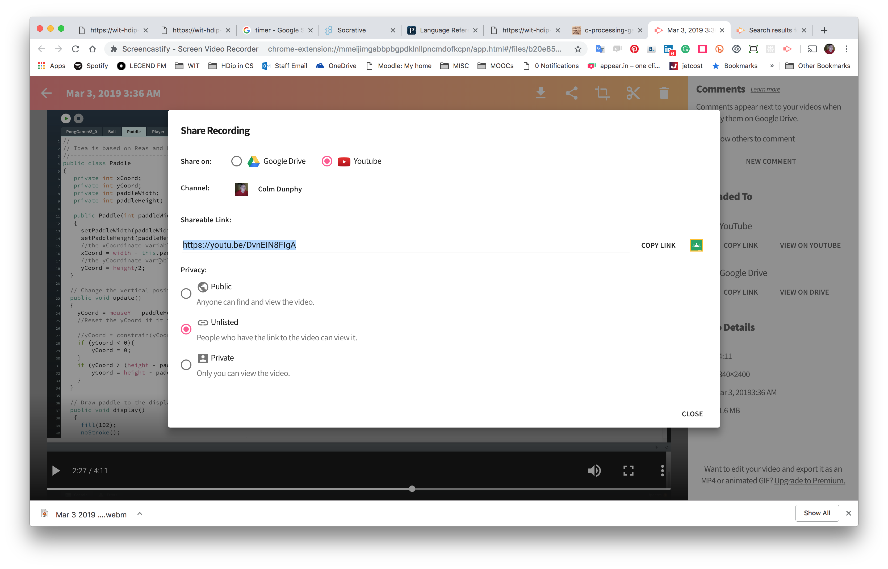

This is your second assignment that will contribute to your grade for the semester. It is worth 30% of your overall grade.
You are asked to write a game (or a more involved working animation).
This will detail, for your second assignment:
Read the specification carefully.
Start working on the assignment early.
When you think you are ready to submit, perform the following CHECKLIST :
Ensure you have covered all the elements mentioned in the marking scheme.
Ensure specifically that your indentation is consistent.
Write comments to explain what your game does/ how it works, particularly how tricky code works and what it does.
Ensure that your name, student number and description of what your code does is written at the top of the main sketch file.
Ensure that you have named the submission (zip) file according to the prescribed naming convention.
In your second assignment, you are asked to write code to produce a game ( or a more complex dynamic animation) of your choice with user interaction of your choice in Processing (Java).
The aim of the assignment is for you to demonstrate your understanding of all the structures seen so far. Specifically, you are asked to include the following:
At least one user-defined CLASS, adhering to encapsulation rules, complete with:
The usual Processing classes containing the draw(), setup(), etc. This class must use your user-defined class(es) in an appropriate manner.
Use of selection (if) and iteration (loops).
Use of primitive arrays.
Use of object arrays.
The complexity of the entire code is important, i.e. the more complex the code, the more marks you will achieve. (see marking scheme).
The Pong game v8 that we covered in lectures and labs is an example of excellent marks for complexity.
Pong has many elements common to most games. Build your own unique game. You cannot submit Pong!
You must include specific references to games, books, or websites that influence your assignment.
When submitting it is important that you explicitly highlight how you've met each part of the spec.
You may develop Assignment 1 further but it must be refactored according to the A2 specification. Additionally, you will need to highlight this refactoring and the additional features built this time.
NOTE: You will not receive marks twice for submitting the same work, only the differences
There are two components to your overall mark:
Please read below regarding interviews.
| Part | Description | Marks |
|---|---|---|
| A | Inclusion of completed Readme, Reflection, and Video | (5 marks) |
| B | Comments, indentation, naming, structure of code, etc. | (5 marks) |
| C | Use of standard programming control contructs (if, loop) | (5 marks) |
| D | Working game with inclusion of bespoke methods in the main sketch. | (5 marks) |
| E | User-defined class (at least one): | |
| E1 | - With appropriate fields, constructors, getters, setters | (10 marks) |
| E2 | - Class bespoke methods | (15 marks) |
| E3 | - The user-defined class(es) are used in an appropriate manner | (15 marks) |
| F | Data structure: | |
| F1 | - Use of a data structure to store information i.e. array | (20 marks) |
| F2 | - Calculations performed on the information stored | (20 marks) |
This is a mark out of 10 based on the complexity of the problem solved/code. So you will get more marks if the animation is more involved than one that is very simple. Please do not confuse an elegant solution of a complex problem with a simple problem.
The final mark is calculated by multiplying the two component marks and dividing by 10. This means that complexity is a multiplier so a weakness in that will negatively affect your grade.
Example:
Please note that we reserve the right to interview you on your code. You may be asked (for example) to explain:
If we need to interview you on your work, you will be given a mark out of 10 for the interview. This mark will be a multiplier of your overall grade. For example:
The submission is due Sunday 24 March 2019, 11.59PM.
A 15% penalty per day will be applied there after (unless mitigating circumstances, with supporting documentation, is supplied). Feedback will also be delayed on late submissions.
The dropbox is available in the 'Assignments' section in Moodle.
Your files should be contained in a folder named according to the rule:
You should then compress (zip) the folder that contains all the sketches used to develop your assignment; this is the file that you should submit.
You must include a readme tab in the sketch. The contents of this tab should be of the following format:
/*
Name :
Student Number:
Brief description of the game developed:
Justification of spec:
Known bugs/problems:
Any sources referred to during the development of the assignment (be precise and specific with references) {there no need to reference lecture/lab materials}:
*/If you hand up a more advanced version of your first assignment, you will need to explicitly state the addtional features added, in the description section above and also explicitly state the difference between the first version that you handed up, and this version.
You must carry out your own self assessment on your work and show this by including a reflection tab in the sketch. Use the rubric to reflect on the work you've done and assess yourself accordingly.
Detail for each row of the rubric, examples that you used in your code, what they are used for, and line numbers where they can be found.
/* Reflection
Name :
Student Number:
Link to Video: e.g. https://youtu.be/DvnEIN8FIgA
Part A - Mark (X /5)
-----------------------------
Includsion of completed Readme and Reflection, and Video
<just a mark needed here>
Part B - Mark (X /5)
-----------------------------
Comments, indentation, naming, structure of code, etc.
<just a mark needed here>
Part C - Mark (X /5)
-----------------------------
Use of if and loop statements:
line 10 to validate ...
line 14 to iterate (for loop) ...
for loops used on:
line 43 to draw aliens
line 70 to draw bonus pickups
use of do while loop on:
line 90 to keep the program going (resetting)
Part D - Mark (x /5)
-----------------------------
Working game with inclusion of bespoke methods in the main sketch.
bespoke method:
Method1() on line x to ...
Method2() on line y to ...
Method3() on line z to ...
...
Part E1 - Mark (x /10)
-----------------------------
User-defined class with appropriate fields, constructors, getters, setters
line 97 class named Q
line 97 class named R
...
Part E2 - Mark (x /15)
-----------------------------
Class bespoke methods:
Method1() on line x to ...
Method2() on line y to ...
Method3() on line z to ...
...
Part E3 - Mark (x /10)
-----------------------------
The user-defined class(es) are used in an appropriate manner
<just a mark needed here>
Part F1 - Mark (x /20)
-----------------------------
- Use of a data structure to store information i.e. array
delcared on line...to ...
initialized on line...
used on line...
...
Part F2 - Mark (x /20)
-----------------------------
- Calculations performed on the information stored
line X
...
*/You must include a video (screen recording) [max 10 mins] to present your assignment.
The video must include audio (microphone).
There are many software programs that enable you to record the desktop as a video (for the purposes of this assignment I suggest using an extension for the Chrome Browser called ScreenCastify but you can use any. I've listed some below):
If you really can't copy, use your phone on a stand (not hand held).
You will need to upload your video to YouTube as unlisted. Copy the URL and include in the reflection where shown.

WARNING: Allow plenty of time to do your Reflection, make your video, and upload it to YouTube especially if you're broadband is slow.
| Part | Description | Duration |
|---|---|---|
| Intro | Describing the game | (<0.5 min) |
| Demo | Showing the game running highlighting all the features that you want considered for marking. | (<3 mins) |
| Code Walkthrough | Highlight the key classes/methods/elements in your code to demonstrate your understanding of the work being presented. If parts are not working highlight them also. | (<6.5 mins) |